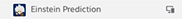

<div class="row monitor-height chapter-ai">
  <div class="col-lg-12 monitor-height">
    <div class="row monitor-height">
      <hotspots-container>
        <wizard name="monitor" on-finish="finishedWizard()">
          <wz-step>
            <div class="step step-0"></div>
          </wz-step>
          <wz-step>
            <div class="step step-1">
              
              <div class="drop-box active" data-drop="true" jqyoui-droppable="{index: 1 , onDrop:'Next'}"></div>
            </div>
          </wz-step>
          <wz-step>
            <div class="step step-2">
              <div class="click-box" ng-class="{active:!button.show}" ng-click="Next(); gtmTrack('progress', 'ai: complete step 3')"></div>
            </div>
          </wz-step>
          <wz-step>
            <div class="step step-3">
              <!-- filler backdrop while phone is up -->
            </div>
          </wz-step>
          <wz-step success="true">
            <div class="step success">
<!--                <div class="confetti-container" ng-open="renderConfetti()">-->
<!--                  <canvas id="success-confetti"></canvas>-->
<!--                </div>-->
              <li-center>
                <h3>Chapter Summary</h3>
                <h4>AI</h4>
                <p>
                  Now, your reps are equipped with the tools they need to wow your customers and win more deals, increasing your ROI.<br /><br />Want to see how Heroku can provide a seamless, connected experience for you and your customers?
                </p>
                <div class="btn-container">
                  <a ui-sref="chapter-customer-app" li-autofocus="wizard.stateIndex == 4" class="btn btn-rounded active"
                     ng-click='gtmTrack("progress", "Continue", "ai: summary screen")'
                  >Continue</a>
                  <a href="https://www.salesforce.com/products/einstein/overview/" class="success-text-link" target="_blank" rel="noopener noreferrer"
                     ng-click='gtmTrack("cta clicks", "Learn more about Data Cloud", "ai: summary screen")'
                  >Learn more about AI <span class="carat"><i></i></span></a>
                </div>
              </li-center>
            </div>
          </wz-step>
        </wizard>
      </hotspots-container>
    </div>
  </div>
</div>
